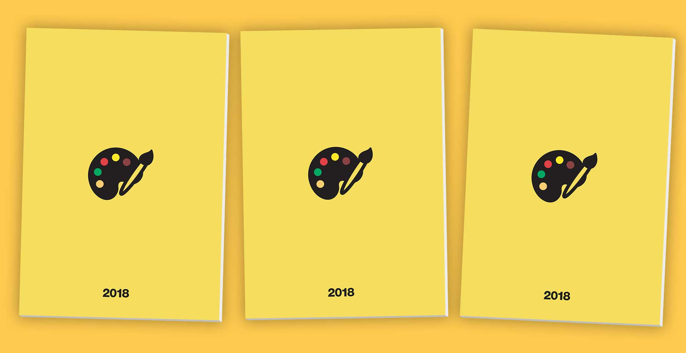

Il Club degli Amici di UNOTRE sostiene la cultura che preferisce, per contrastare il dilagare della babberia.
Accademia Creativa è nata per selezionare e promuovere giovani in linea con questa missione: chiunque può farne parte, purché giovane e raccomandato da un socio del Club.
Edizione 2018
La pazzesca esposizione di Accademia Creativa 2018 si è svolta il 30 e 31 marzo presso la Galleria Salvatore Lanteri a Milano.
Le immagini


I giovani raccomandati e i loro lavori
Clicca sul raccomandato per vedere il suo lavoro.
Anna e Bea
Giacomo Aguiari
Nicolò Amoretti
Thomas Balducci
João Paulo, Nicolò e Alvaro
Sabrina Costantini
Federico Epis
Niccolò Ferrari
Asia Flamini
Giorgio Galgano
Ralph Lautrec
Simonetta Leonora
Maria Mam

Mauro Mosca
Stefano Paiardi
Riccardo Palagi
Nicola Pazienza
Leonardo Pedio
Christian, Filippo e Riccardo
Gabba Stanza
Il catalogo
Comprati il catalogo dell'edizione 2018. Costa 13€ a copia inclusa la spedizione (in Italia).

Aggiornamenti
Se vuoi aggiornamenti su Accademia Creativa iscriviti alla newsletter:
Sponsor
Main sponsor:
Contatti
Se hai ulteriori domande contattaci all'indirizzo accademia@unotre.club